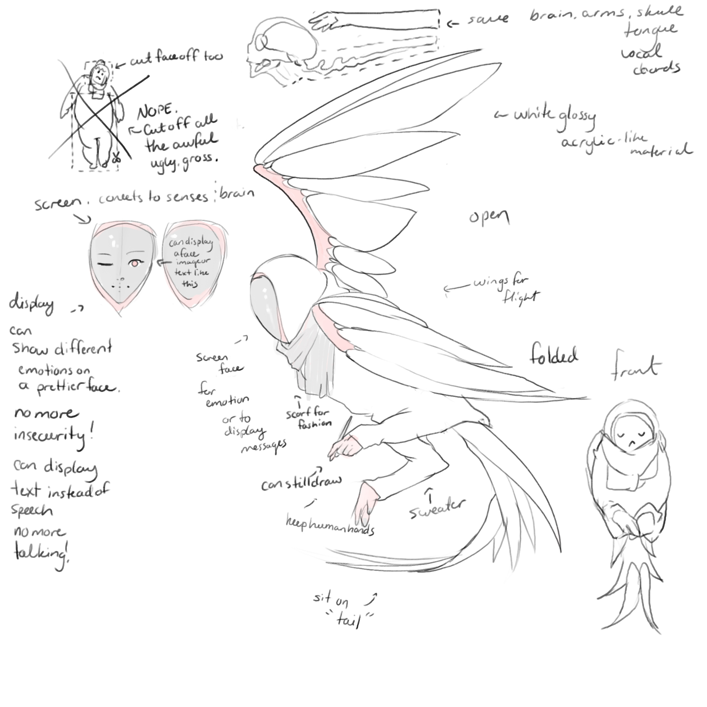
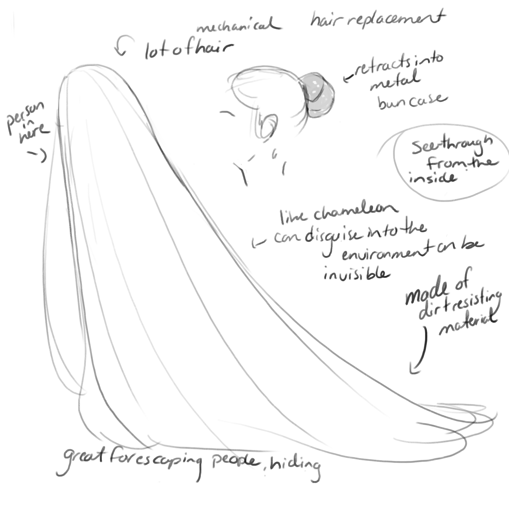

ART 106
[ prosthetic ]
Aesthetic

I don't like my body at all, so for something that's aeshetically nice, I had to just get rid of it. I saved the important parts, my brain and my hands and the necessities to control them and collect sensory information. I would face removed and replaced with a screen that can display whatever face I want and express different emotions through that face. It would also be able to display text, so that I don't have to speak out loud. The whole shape is an owl form because I wanted wings and the owl form fits with that theme while allowing for a human-like face. The birds legs would be replaced with my arms, which would allow them a greater range of motion and less mass in the way for better creative efficiency. As to not get my hands dirty, rather than sitting on them, my new form would have a sturdy, articulated tail that can act as a stand for me to sit on. The wings are foldable to my "back" like a bird's. They're made of broad sections so they're easy to both clean and fold up. The whole body would be made smooth shiny white acrylic, accented with rose gold and gray fabric to create the wing webbing and a scarf for fashion. The figure would also wear a sweater to hide the likely grotesque patchwork between flesh and frame that would have to be pieced together to make it work.
Practical

Again I hate my appearance, so if I have to design something for myself, getting rid of "me" is the first priority. And while I don't hate interacting with other people, it often makes me more miserable than if I hadn't. I think it would be nice to have my hair replaced with a sort of mechanical hair that can extend into a full body cloak that blends into the environment and makes me invisible. I could feel a lot more comfortable going places if no one could see me and I don't have to interact with people unless I want to. If I have to look normal, then the hair can compress and retract itself into a tidy bun case that sits on my head like a bun usually would. It would be made of a dirt resistant material because it'll be floor length.